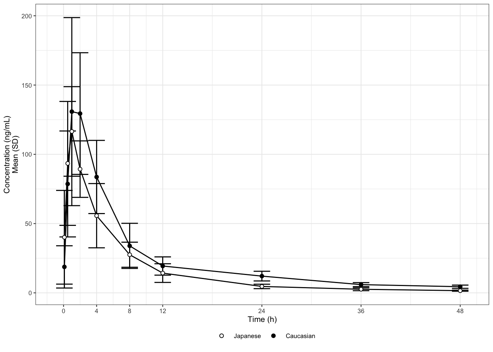
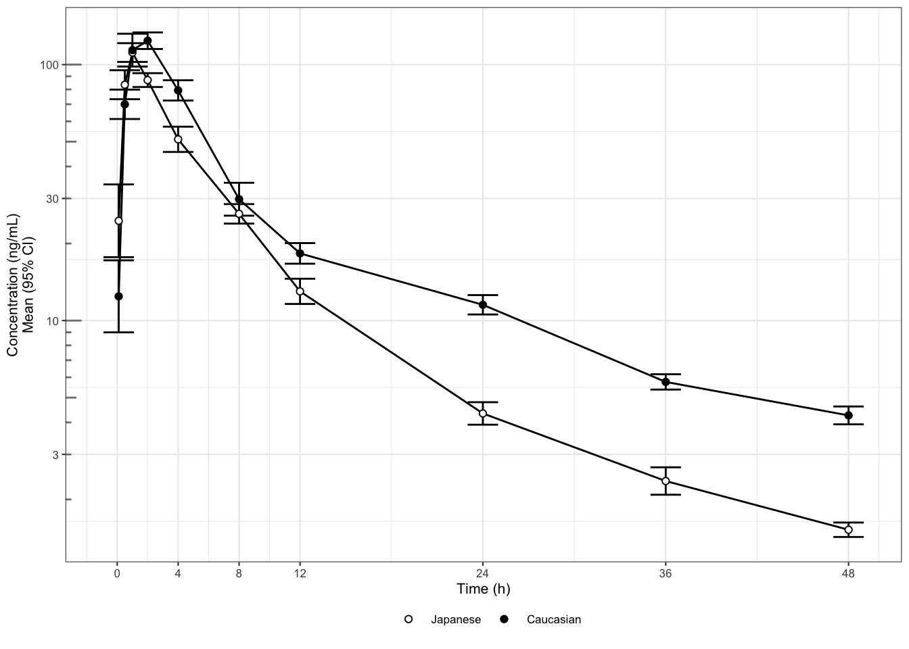
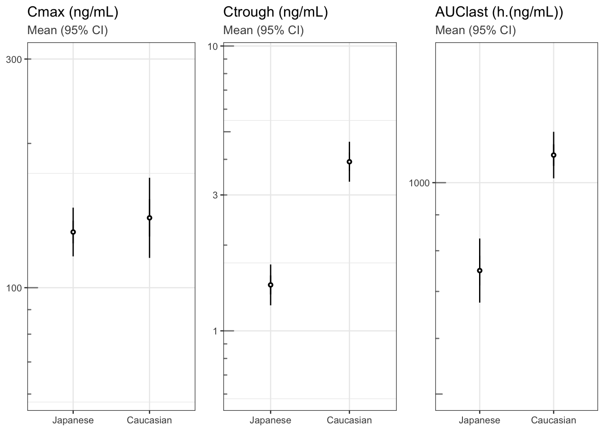
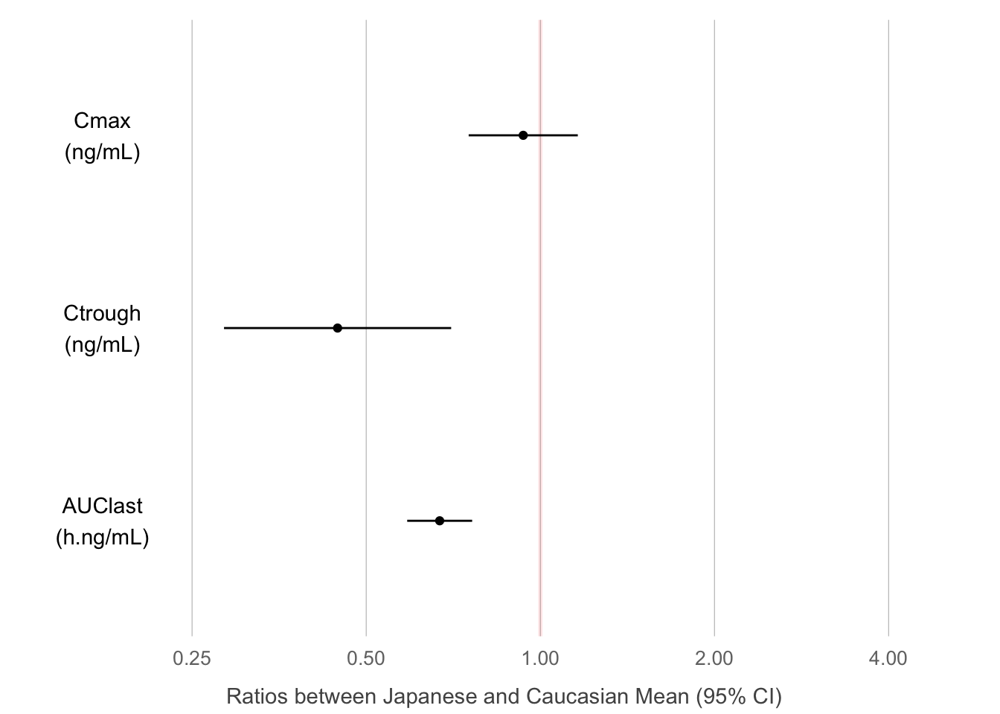

my_data <- read_csv("../../data/402_case2_PKdataset.csv") %>%
filter(CMT == 2 & DOSE == 300 & PART == 1 & STUDY == 1) %>%
mutate(
TRTACT = factor(TRTACT, levels = rev(unique(TRTACT[order(DOSE)]))),
ETHN = factor(ETHN),
ETHN = factor(ETHN, levels = rev(levels(ETHN)))
)Pharmacokinetic exposure by ethnicity
case studies
example code
PK/PD
subgroups
Clarifying the purpose.
This case study is inspired by a publication comparing the pharmacokinetic exposure of a drug in Caucasian vs. Japanese subjects. The same single oral dose was administered to all subjects. The original graph displays mean +/- standard deviations (SD) of the plasma concentration over time, grouped by ethnicity (Caucasian or Japanese).
After reading in and performing a number of small number of data transformations we recreate the original graph in Figure 1.
## Plot mean and error bars (SD) on a linear scale
my_data %>%
ggplot(aes(
x = NOMTIME,
y = LIDV,
group = interaction(ETHN, CYCLE)
)) +
stat_summary(
geom = "errorbar",
width = 2,
fun.data = mean_sdl,
fun.args = list(mult = 1)
) +
stat_summary(geom = "line", size = 0.5,
fun.y = mean) +
stat_summary(
aes(fill = ETHN),
geom = "point",
size = 1.5,
fun.y = mean,
stroke = 0.5,
shape = 21
) +
scale_fill_manual(values = c("white", "black")) +
scale_x_continuous(breaks = c(0, 4, 8, 12, 24, 36, 48, 72)) +
xlab("Time (h)") +
ylab("Concentration (ng/mL)\nMean (SD)") +
theme_bw(base_size = 8) +
theme(
legend.title = element_blank(),
legend.position = "bottom",
legend.box.spacing = unit(0, "mm")
)
This time, let us start with Law 1. What is the purpose of this graph? For drugs that are mainly developed in a Caucasian population, Japanese drug regulation requires sponsors to investigate whether the pharmacokinetics (PK) are similar or different between Caucasian and Japanese populations. The purpose of this graph is to help address this question. Looking at it, we may be tempted so say that the PK are reasonably similar. But are they really? If they are not, then in what way?
This leads us to Law 2: show the data clearly. The graphical attributes in Figure 1 appear to be wisely chosen: the symbols and labels are clear, the gridlines are supportive and stay in the background, and there is no unnecessary adornment. However, at least two things obscure the answer to our question of interest. First, the concentrations are plotted on a linear scale, which makes it difficult to distinguish them at the lower end of the profile. Concentrations should be plotted on a logarithmic scale because they are log-normally distributed. In fact, for concentrations in particular (but not generally for any log-normally distributed data) we should produce both types of display: one on a log-linear scale (to assess the elimination phase) and one on a linear scale (to see the peak more clearly). Second, it is hard to determine whether any differences are significant when standard deviations are plotted instead of standard errors or confidence intervals. Standard deviations show the variation in the data; they do not shrink when more data is collected. Standard errors show the variation in the means. Confidence intervals may be the best choice as they directly show the uncertainty about the means.
## Mean (95% CI) error bars, log scale
my_data %>%
ggplot(aes(
x = NOMTIME,
y = LIDV,
group = interaction(ETHN, CYCLE)
)) +
stat_summary(
geom = "errorbar",
width = 2,
fun.data = mean_cl_normal,
fun.args = list(mult = 1)
) +
stat_summary(geom = "line", size = 0.5,
fun.y = mean) +
stat_summary(
aes(fill = ETHN),
geom = "point",
size = 1.5,
fun.y = mean,
stroke = 0.5,
shape = 21
) +
scale_fill_manual(values = c("white", "black")) +
scale_x_continuous(breaks = c(0, 4, 8, 12, 24, 36, 48, 72)) +
xlab("Time (h)") + ylab("Concentration (ng/mL)\nMean (95% CI)") +
guides(color = guide_legend(title = "Dose")) +
scale_y_log10() +
annotation_logticks(base = 10,
sides = "l",
color = rgb(0.5, 0.5, 0.5)) +
theme_bw(base_size = 8) +
theme(
legend.title = element_blank(),
legend.position = "bottom",
legend.box.spacing = unit(0, "mm")
)
These issues have been fixed in Figure 2 (we only show the log-linear version). To reduce cluttering, the ticks at the end of the whiskers have also been omitted (non-data ink). If the graph displayed more than two profiles, we might consider replacing the whiskers by (shaded) confidence bands, or separating the graph out in panels or “small multiples” (see bottom of the backside of the Cheat Sheet. From Figure 8B it appears that the higher concentrations are not meaningfully different, but the elimination phase does differ between the two ethnicities. This could also translate to different average exposures. That is, based on two simple changes in the plot, we now see answers emerging for our initial question about PK differences. We see them emerging with respect to three key PK characteristics: peak, elimination/trough, and overall exposure. While (depending on the drug) similarity in the peak may be reassuring from a safety point of view, a lower overall exposure in Japanese subjects could be a concern for efficacy.
Moving on to Law 3, let us now make the message obvious. We could choose a completely different graph type to hone in on the message. Figure 3 shows the three (non-compartmentally derived) quantities Cmax, Ctrough and AUClast with 95% confidence intervals by ethnicity. Clearly, Ctrough and AUC are different between the two ethnicities, but Cmax is not. We could derive these quantities from a compartmental model fit and produce the same plot. Or we could go one step further and show directly their geometric mean ratio, Japanese vs. Caucasian subjects, as in Figure 8D. This last plot answers the initial question most succinctly, and its graphical appearance has also been further simplified (no frame, minimal gridlines, mildly highlighted line of equality), to not distract from the message. In practice, Figures 2, 3 and/or 4 together may be most informative, covering the time course as well as differences in key parameters.
theme_set(theme_bw(base_size = 10))
## Plot cmax, ctrough, AUClast dots (95% CI) in separate panels
Cmax <- my_data %>%
filter(!is.na(LIDV)) %>%
group_by(ID, ETHN) %>%
summarize(Cmax = max(LIDV),
Ctrough = min(LIDV))
Ctrough <- my_data %>%
filter(!is.na(LIDV)) %>%
group_by(ID, ETHN) %>%
summarize(Ctrough = min(LIDV))
AUClast <- my_data %>%
filter(!is.na(LIDV))
AUClast <-
data.frame(stack(sapply(split(AUClast, AUClast$ID), function(df)
trapz(df$TIME, df$LIDV))))
names(AUClast) <- c("AUC", "ID")
AUClast$ID <- as.numeric(as.character(AUClast$ID))
AUClast <- AUClast[order(AUClast$ID),]
AUClast <-
merge(AUClast, unique(my_data[c("ID", "ETHN")]), by = "ID")
gg1 <- Cmax %>%
ggplot(aes(x = ETHN, y = Cmax, group = ETHN)) +
stat_summary(fun.data = mean_cl_normal,
geom = "errorbar",
width = 0) +
stat_summary(shape = 21, fill = "white", size = 0.2) +
labs(title = "Cmax (ng/mL)", subtitle = "Mean (95% CI)") +
scale_y_log10(breaks = c(0.3, 1, 3, 10, 30, 100, 300, 1000, 3000),
limits = c(60, 300)) + annotation_logticks(base = 10,
sides = "l",
color = rgb(0.5, 0.5, 0.5)) +
theme(
axis.title.x = element_blank(),
axis.title.y = element_blank(),
plot.subtitle = element_text(color = rgb(0.3, 0.3, 0.3))
)
gg2 <- gg1 %+% #Cmax %+%
aes(x = ETHN, y = Ctrough) +
labs(title = "Ctrough (ng/mL)") +
scale_y_log10(breaks = c(0.3, 1, 3, 10, 30, 100, 300, 1000, 3000),
limits = c(0.6, 9))
gg3 <- gg1 %+% AUClast %+% aes(x = ETHN, y = AUC) +
labs(title = "AUClast (h.(ng/mL))") +
scale_y_log10(breaks = c(0.3, 1, 3, 10, 30, 100, 300, 1000, 3000),
limits = c(500, 1500))
grid.arrange(arrangeGrob(gg1, gg2, gg3, nrow = 1), nrow = 1)
Cmax2 <- Cmax %>%
mutate(DV = Cmax,
logDV = log(Cmax),
LABEL = "Cmax") %>%
select(c("ID", "ETHN", "DV", "logDV", "LABEL"))
results <- t.test(logDV ~ ETHN, Cmax2)
PKmetrics <- data.frame(
y2.5 = exp(results$conf.int[1]),
y97.5 = exp(results$conf.int[2]),
ymean = exp(as.numeric(results$estimate[1] - results$estimate[2])),
var = "Cmax",
unit = "ng/mL"
)
Ctrough2 <- Ctrough %>%
mutate(DV = Ctrough,
logDV = log(Ctrough),
LABEL = "Ctrough") %>%
select(c("ID", "ETHN", "DV", "logDV", "LABEL"))
results <- t.test(logDV ~ ETHN, Ctrough2)
PKmetrics <- rbind(
PKmetrics,
data.frame(
y2.5 = exp(results$conf.int[1]),
y97.5 = exp(results$conf.int[2]),
ymean = exp(as.numeric(results$estimate[1] - results$estimate[2])),
var = "Ctrough",
unit = "ng/mL"
)
)
AUClast2 <- AUClast %>%
mutate(DV = AUC,
logDV = log(AUC),
LABEL = "AUClast") %>%
select(c("ID", "ETHN", "DV", "logDV", "LABEL"))
results <- t.test(logDV ~ ETHN, AUClast2)
PKmetrics <- rbind(
PKmetrics,
data.frame(
y2.5 = exp(results$conf.int[1]),
y97.5 = exp(results$conf.int[2]),
ymean = exp(as.numeric(results$estimate[1] - results$estimate[2])),
var = "AUClast",
unit = "h.ng/mL"
)
)
PKmetrics$var <-
factor(PKmetrics$var, levels = c("AUClast", "Ctrough", "Cmax"))
PKmetrics %>%
ggplot(aes(
x = var,
y = ymean,
ymin = y2.5,
ymax = y97.5
)) +
paper_theme() +
geom_hline(
yintercept = 1,
size = 1,
colour = "red",
alpha = 0.1
) +
scale_y_log10(breaks = c(0.25, 0.5, 1, 2, 4)) +
geom_point() +
geom_errorbar(width = 0) +
xlab("") +
scale_x_discrete(breaks = NULL, labels = NULL) +
ylab("Ratios between Japanese and Caucasian Mean (95% CI)") +
geom_text(aes(
x = var,
y = 0.175,
label = paste0(var, "\n(", unit, ")")
)) +
theme(
panel.grid.major.x = element_line(color = "gray", size = 0.2),
panel.grid.major.y = element_blank(),
panel.border = element_blank(),
axis.title.x = element_text(size = 11, vjust = -1.25),
axis.title.y = element_blank()
) +
coord_flip(ylim = c(0.15, 5)) 
sessionInfo()## R version 4.3.0 (2023-04-21)
## Platform: aarch64-apple-darwin20 (64-bit)
## Running under: macOS Ventura 13.6.3
##
## Matrix products: default
## BLAS: /Library/Frameworks/R.framework/Versions/4.3-arm64/Resources/lib/libRblas.0.dylib
## LAPACK: /Library/Frameworks/R.framework/Versions/4.3-arm64/Resources/lib/libRlapack.dylib; LAPACK version 3.11.0
##
## locale:
## [1] en_US.UTF-8/en_US.UTF-8/en_US.UTF-8/C/en_US.UTF-8/en_US.UTF-8
##
## time zone: Europe/Zurich
## tzcode source: internal
##
## attached base packages:
## [1] grid stats graphics grDevices utils
## [6] datasets methods base
##
## other attached packages:
## [1] data.table_1.14.8 gridExtra_2.3
## [3] caTools_1.18.2 RColorBrewer_1.1-3
## [5] lubridate_1.9.2 forcats_1.0.0
## [7] stringr_1.5.0 dplyr_1.1.2
## [9] purrr_1.0.1 readr_2.1.4
## [11] tidyr_1.3.0 tibble_3.2.1
## [13] ggplot2_3.4.2 tidyverse_2.0.0
## [15] distill_1.6
##
## loaded via a namespace (and not attached):
## [1] gtable_0.3.3 xfun_0.39 htmlwidgets_1.6.2
## [4] tzdb_0.4.0 vctrs_0.6.2 tools_4.3.0
## [7] bitops_1.0-7 generics_0.1.3 parallel_4.3.0
## [10] fansi_1.0.4 cluster_2.1.4 pkgconfig_2.0.3
## [13] checkmate_2.2.0 lifecycle_1.0.3 farver_2.1.1
## [16] compiler_4.3.0 munsell_0.5.0 htmltools_0.5.5
## [19] yaml_2.3.7 htmlTable_2.4.1 Formula_1.2-5
## [22] pillar_1.9.0 crayon_1.5.2 cachem_1.0.8
## [25] Hmisc_5.1-0 rpart_4.1.19 tidyselect_1.2.0
## [28] digest_0.6.31 stringi_1.7.12 labeling_0.4.2
## [31] fastmap_1.1.1 colorspace_2.1-0 cli_3.6.1
## [34] magrittr_2.0.3 base64enc_0.1-3 utf8_1.2.3
## [37] foreign_0.8-84 withr_2.5.0 scales_1.2.1
## [40] backports_1.4.1 bit64_4.0.5 timechange_0.2.0
## [43] rmarkdown_2.22 bit_4.0.5 nnet_7.3-18
## [46] hms_1.1.3 memoise_2.0.1 evaluate_0.21
## [49] knitr_1.43 rlang_1.1.1 downlit_0.4.3
## [52] glue_1.6.2 rstudioapi_0.14 vroom_1.6.3
## [55] jsonlite_1.8.4 R6_2.5.1